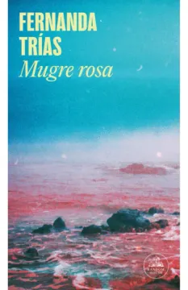

Mugre rosa
Fernanda Trías
De qué trata
En una ciudad portuaria asolada por una plaga misteriosa, una mujer intenta descifrar por qué su mundo se desmorona. No es sólo el acecho de la enfermedad y la muerte, las algas y los vientos pestíferos, los amasijos rosáceos que son ya lo único que se puede comer, sino el colapso de todos sus vínculos afectivos, la incertidumbre, la eclosión de una soledad radical.
Por qué dialoga con Latinoamérica hoy
Esta novela fue escrita antes del COVID-19 y publicada en 2020. Las raíces de la idea provienen de preocupaciones previas sobre crisis ambientales y pandemias: no es un don profético, sino una sensibilidad artística hacia las tensiones del inconsciente colectivo. El corazón de la historia no es la pandemia en sí, sino el impacto de esta en las relaciones de la protagonista: con un matrimonio desgastado, la relación con su madre y el vínculo con Mauro, un niño que padece un síndrome extraño basado en el síndrome de Prader-Willi. Ese mismo síndrome funciona como un espejo de la insaciabilidad humana, donde el consumo desenfrenado de recursos conduce a una ciudad portuaria infestada con referencias a Montevideo. Es una ciudad transfigurada para crear una atmósfera universal, pero que dialoga con el contexto de su ciudad de origen.